The Observation
Widgets were designed for phones. They were never rethought for virtual spaces.
On your phone, widgets sit on a flat homescreen — a grid of glanceable tiles. But what happens when that homescreen becomes an entire room? This project explores what widgets could become when they're freed from the screen and bound to the space around you.
Humans naturally organize physical space by purpose. Keys go by the door. Recipes stay in the kitchen. We already associate specific surfaces with specific tasks — we just never applied that logic to digital interfaces.
Starting Point
Before designing for space, I studied the screen.
I asked a handful of peers to screenshot their iPhone home screens and walk me through how they organized their widgets — what they check first, what they ignore, and exactly why things ended up where they did.
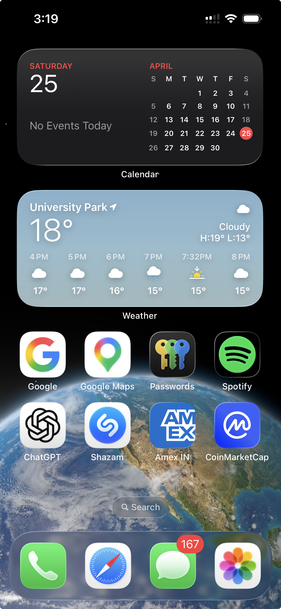
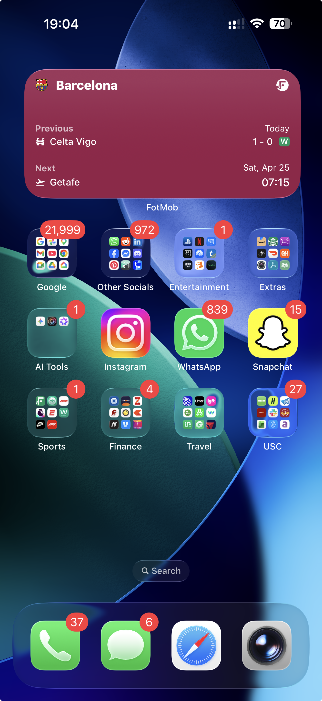
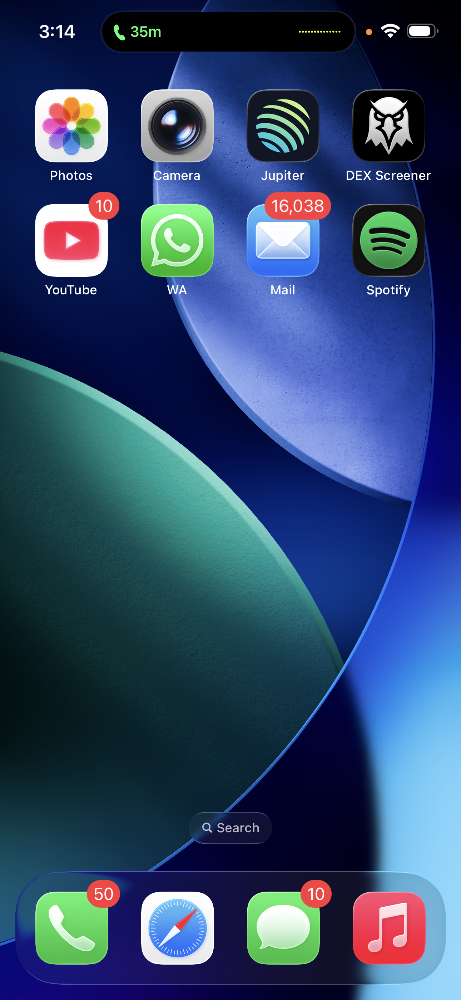
People already organize by context
"I put weather and calendar on my first page because those are the only two things I absolutely need before I walk out the door. Everything else is buried."
Widgets fail without a trigger
"I took all my widgets off my home screen. They just ended up blending into the background, and I realized I wasn't even looking at them anymore."
Physical space holds information
"I still keep a physical sticky note by the door to remember my keys. Digital reminders just get completely lost in the noise of a hundred other notifications."
What if widgets could live where their information already belongs?
The Concept
Your home already knows where information lives.
You check the weather by looking out the window. You review your form in the bathroom mirror. You read recipes on the kitchen counter. Loci maps everyday widgets to the surfaces that give them meaning.
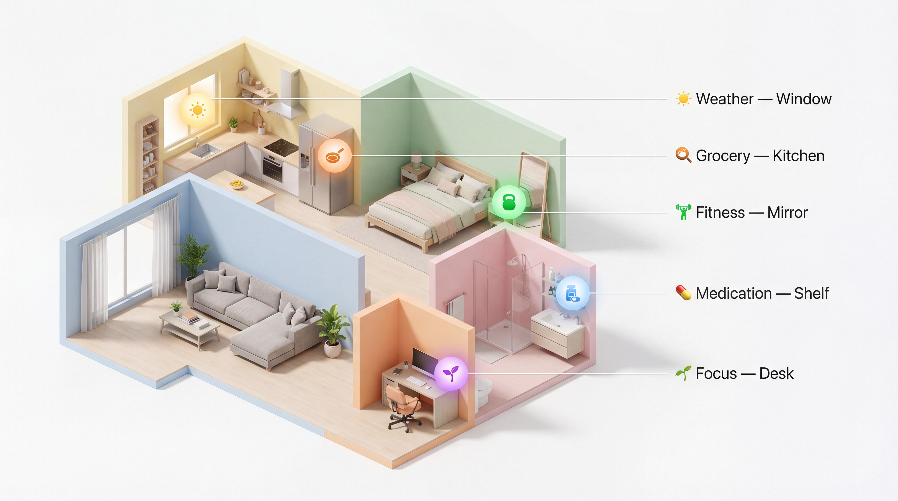
Each widget anchored to the place where its information is most useful.
Design Framework
Four principles. One spatial language.
Surface Semantics
The physical surface defines the widget's purpose. A window means weather. A counter means cooking. The mapping is intuitive because it already exists in your behavior.
Ambient-First
Widgets are invisible until relevant. No home screens, no app grids, no manual placement. Information surfaces only when context demands it.
Proximity Intelligence
Your distance to a surface determines interaction depth. Far away: nothing. Walking past: a glance of data. Standing in front: full interaction panel.
Zero Configuration
You never drag a widget onto a wall. Loci observes your routines and learns which surfaces matter. Setup is living, not installing.
Behavior Specification
Four states. One continuous flow.
Every Loci widget follows the same lifecycle, from invisible to ambient. The transition comes from your gaze and proximity. Never a manual toggle.
Design Journey
From sketches to spatial specification.
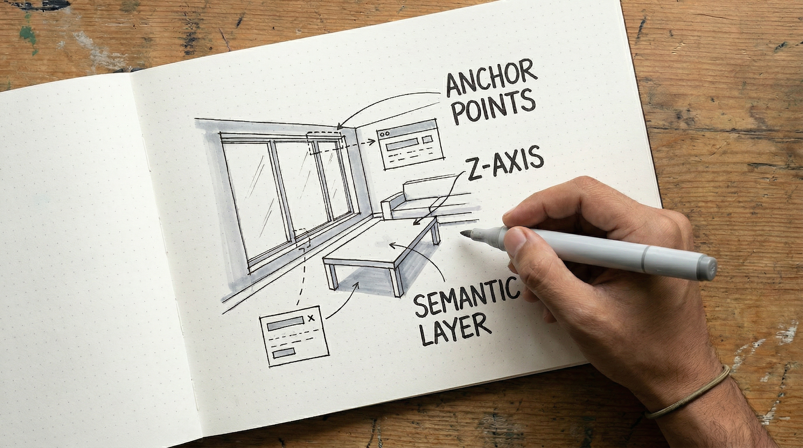
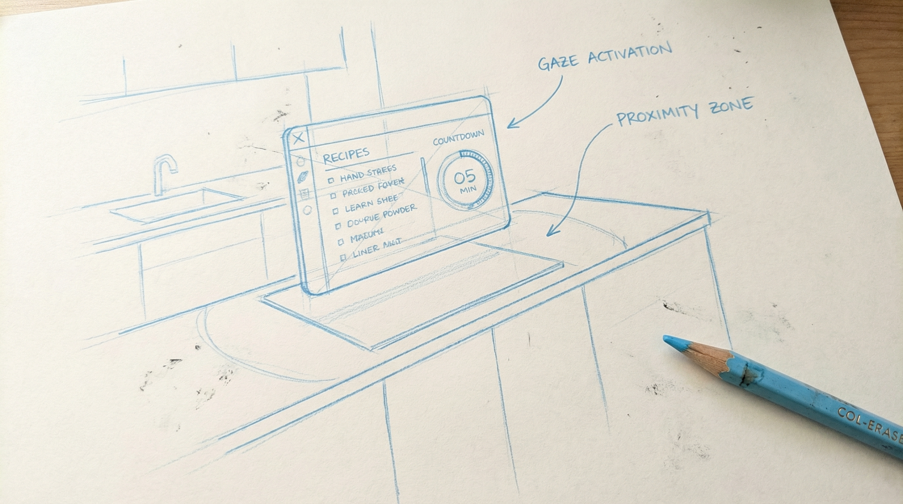
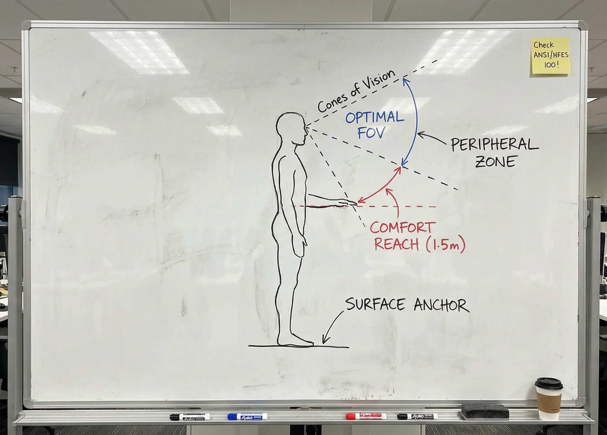
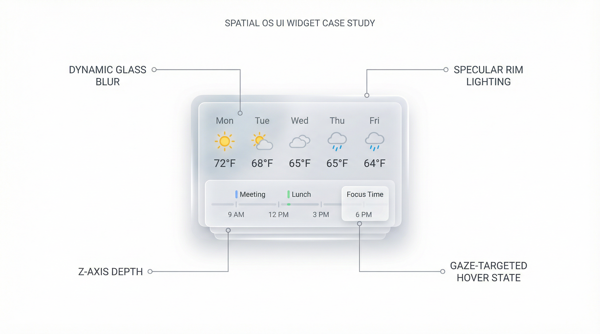
Scenario
A day with Loci.
Here's what a normal day looks like when your home understands where information belongs.
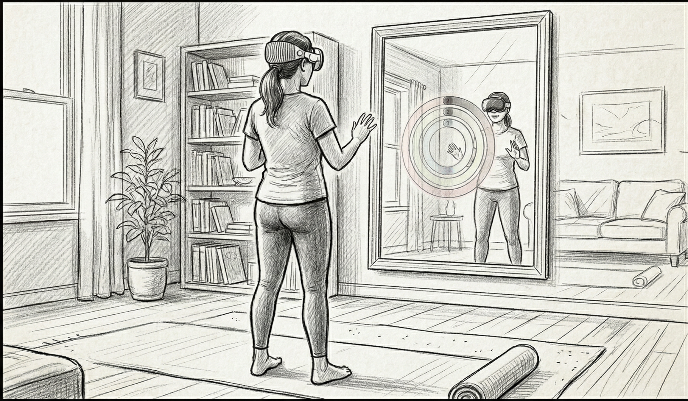
Relative Anchor
Activity rings float perfectly in the air between you and the morning mirror.
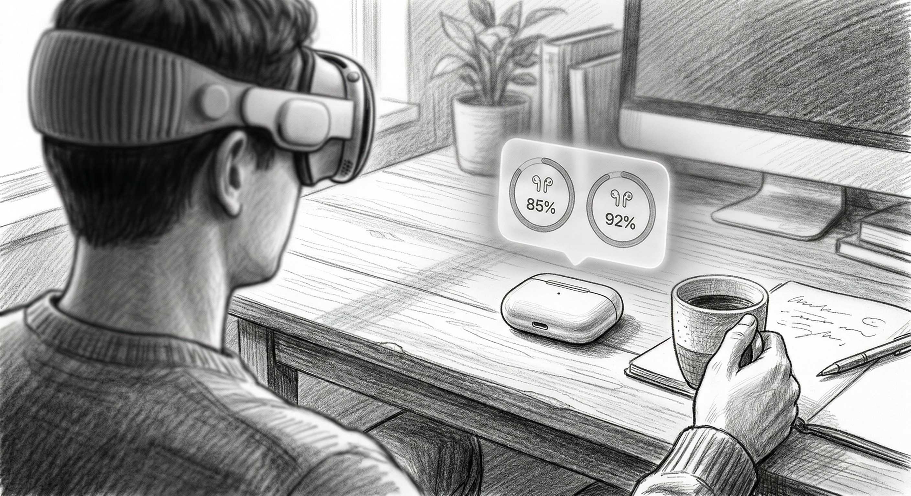
Ecosystem Tracking
A battery status widget is permanently anchored above your physical AirPods case.
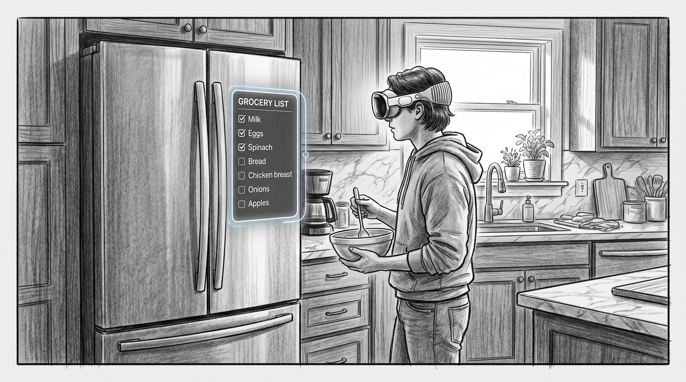
Plane Snap
Your grocery list is secured perfectly flat against the physical refrigerator door.
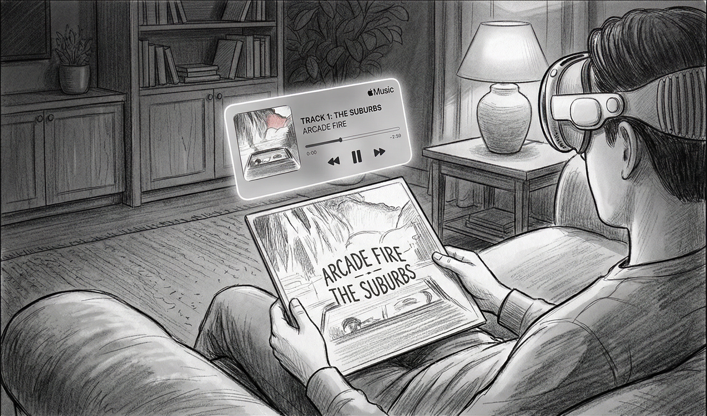
Image Tracking
Looking at a physical vinyl record pulls up the digital Apple Music playback controls.
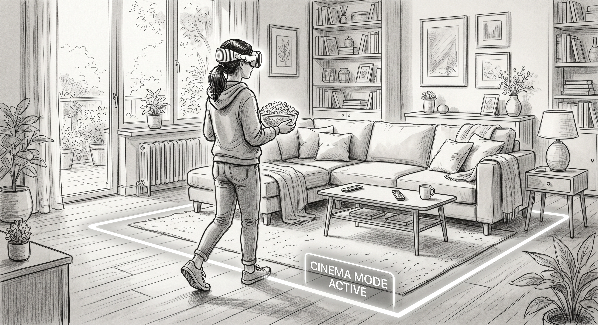
Defined Boundary
Crossing the glowing threshold into the living room triggers the dim Cinema Mode.
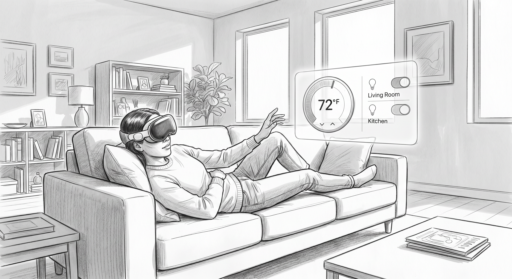
Spatial Coordinate
A smart control panel floats conveniently in the air next to the couch armrest.
Proof of Build
I built a working prototype in Unity to test whether surface detection and contextual placement actually work on visionOS.